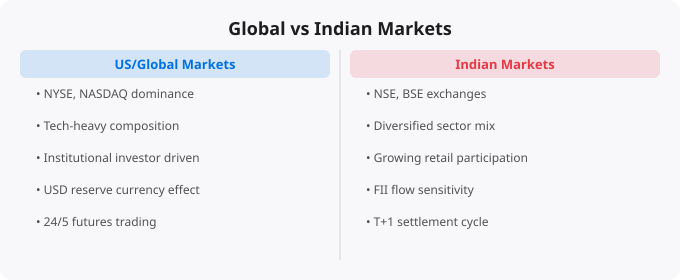

Indian investors increasingly have access to global financial markets through international mutual funds, ETFs, and direct investing platforms. But many people approach global markets — especially US markets — with the same mental models they use for Indian markets. This creates misunderstandings that lead to poor decisions. Understanding the key structural, cultural, and behavioral differences between Indian and global markets is essential before you invest internationally.
The US stock market has a history going back over 200 years. The New York Stock Exchange was founded in 1792. This long history has created institutional knowledge, regulatory frameworks, market practices, and investor behavior patterns that have been refined over two centuries. Indian markets, while ancient in terms of commercial activity, have a modern equity market history that is much shorter. The NSE was founded only in 1992. The regulatory and market infrastructure is younger and still evolving.
Market depth — the ability to trade large quantities without significantly moving the price — is dramatically greater in US markets. The daily trading volume in the US markets dwarfs Indian markets. This matters for institutional investors but also affects the behavior of individual stocks and the information embedded in price movements. In deeper markets, prices tend to more accurately reflect available information.
When you invest in US markets as an Indian investor, you are taking on currency risk regardless of how you do it. If the Rupee weakens against the Dollar, your returns in Rupee terms are amplified. If the Rupee strengthens, your returns are diminished. This adds a layer of complexity that does not exist when investing purely in Indian markets.
Historically, the Rupee has depreciated against the Dollar over long periods, which has benefited Indian investors in US markets from the currency component. But this trend is not guaranteed to continue at the same rate, and short-term currency movements can be significant and unpredictable. Investors in global markets need to understand that their returns are a combination of the market return in local currency and the currency movement between that currency and the Rupee.
Indian markets, particularly in technology and consumer sectors, tend to trade at higher valuation multiples relative to earnings than the global average because of the growth premium attached to Indian companies. India's GDP growth rate, its young demographic profile, and the expanding middle class command premium valuations. US markets have their own valuation dynamics, driven by different factors: interest rates, corporate governance standards, technology sector premiums, and the global reserve currency status of the Dollar.
Applying Indian valuation frameworks to US companies — or vice versa — can lead to significant errors. A P/E ratio that seems high in one market context might be entirely normal in another. Understanding the valuation conventions and the underlying factors that drive them in each market is essential for intelligent investing.
US listed companies are subject to extensive disclosure requirements enforced by the SEC (Securities and Exchange Commission). Quarterly earnings reports, annual reports (10-K), material event disclosures (8-K), and proxy statements are all publicly available and contain detailed information. The standard of disclosure and the reliability of financial reporting in US markets is generally very high.
Indian markets have improved significantly in corporate governance standards over the past two decades, and SEBI has been progressively strengthening regulatory requirements. But there remains more variation in disclosure quality across Indian companies, and related party transactions and promoter-driven decisions are more prevalent in Indian markets than in US markets.
The sectoral composition of Indian and US markets is significantly different. US markets are heavily weighted toward technology, healthcare, and financial services. Indian markets have significant weightings in financial services and information technology as well, but also have large weights in energy, materials, and consumer sectors that reflect India's development stage and economic structure.
This means that when you diversify internationally, you are not just getting exposure to a different currency — you are getting exposure to a different mix of industries, growth profiles, and risk factors. The correlation between Indian and US markets has increased over time as global financial markets have become more integrated, but significant differences remain.
The most useful framework is to think of Indian and global markets as complementary rather than competing. Indian markets give you exposure to India's domestic economic growth story — the rising middle class, urbanization, formalization of the economy, and the growth of Indian businesses. Global markets, particularly US markets, give you exposure to the world's most innovative technology companies, globally diversified businesses, and a different currency.
Many financial advisors suggest that Indian investors maintain a core allocation to Indian markets while adding a satellite allocation to international markets for diversification. The specific allocation depends on individual circumstances, but the principle of not concentrating all your investment risk in a single country's economy is sound regardless of which countries are involved.
← Back to BlogFinancial education is only valuable if it changes behavior. The concepts covered here — whether about market mechanics, investment principles, or economic systems — are most useful when they become part of your decision-making framework rather than abstract knowledge that exists separately from your actions. The most important application is self-awareness: understanding why you are tempted to make certain financial decisions, recognizing when emotion is driving a choice that analysis should drive, and building systems (automatic investments, pre-committed rules for buying and selling) that protect you from your own worst instincts under pressure. Good financial decisions compound just as good investments do.
Consistent application of the principles covered here, combined with ongoing learning and hands-on practice, is what separates those who understand technology conceptually from those who can build and operate real systems. The investment in depth pays dividends for years. Keep learning, keep building, and keep asking the questions that drive deeper understanding.
Disclaimer:
This article is for educational and informational purposes only.
It does not constitute investment or financial advice.
Market conditions vary and involve risk.
Reading about markets is not investing. Understanding market theory is not making money. The gap between knowledge and results in investing is filled by the practice of forming independent views, testing them against reality, and updating your thinking when evidence contradicts your expectations.
Developing a genuine market view requires: choosing 2-3 indicators to follow consistently rather than tracking dozens superficially, reading primary sources (earnings reports, central bank statements, economic data releases) rather than just media commentary, maintaining an investment journal where you record your reasoning when making decisions, and reviewing that reasoning 6-12 months later to understand where your thinking was right or wrong.
Weekly routine (30 minutes):
Monday: Review portfolio performance vs benchmark
Tuesday: Read one company annual report (if stock investor)
Wednesday: Check economic calendar for key data releases
Thursday: Review Fed/RBI communications from that week
Friday: Journal -- what happened this week vs expectations?
Monthly routine (2 hours):
Review asset allocation vs targets
Rebalance if any asset class drifted more than 5%
Read one investment book chapter or whitepaper
Review all open positions and thesis validity
Quarterly routine (4 hours):
Portfolio review: what worked, what did not, why?
Tax optimization check
Update financial goals
Read one earnings season summary for key companiesMarkets in liquid, public securities are highly efficient at incorporating publicly available information. Reading the same Bloomberg article, watching the same CNBC segment, and following the same analysts as millions of other investors does not give you an informational edge. By the time you read it, the market has likely already priced it in.
Where individual investors can have a genuine edge: patience (most institutional investors face quarterly performance pressure that prevents holding through temporary weakness), sector expertise (knowing an industry deeply as a practitioner gives real insight), tax efficiency (individual investors can optimise for after-tax returns in ways institutions cannot), and behavior (simply not panic selling during drawdowns outperforms most active strategies).
Beginners think about investing as picking the stocks that will go up the most. Experienced investors think about risk management first -- ensuring that mistakes do not destroy the portfolio's ability to recover and compound. The most important risk management principles: never invest money you will need within 5 years, diversify across asset classes and geographies, avoid leverage (borrowed money amplifies both gains and losses), and size positions so that being completely wrong on any single investment does not materially damage the portfolio.
Standard financial planning guidance: build a 3-6 month emergency fund first. Then invest 10-20% of gross income, increasing toward 20%+ as income grows. For aggressive wealth building, aim for a 30-40% savings rate. Invest consistently regardless of market conditions -- time in the market beats timing the market.
Investing is deploying capital for long periods (years to decades) based on fundamental value creation. Trading is buying and selling over shorter timeframes based on price movements. Most retail investors who attempt trading underperform a simple index fund. Investing in low-cost index funds consistently outperforms most active strategies over 10+ year periods.
Start with NIFTY 50 or NIFTY 500 index funds via SIP (Systematic Investment Plan) through any major AMC or broker. Index funds provide diversification, low costs, and performance that matches the market. Add direct equity only after you have at least 6-12 months of investing experience and genuine time to research individual companies.